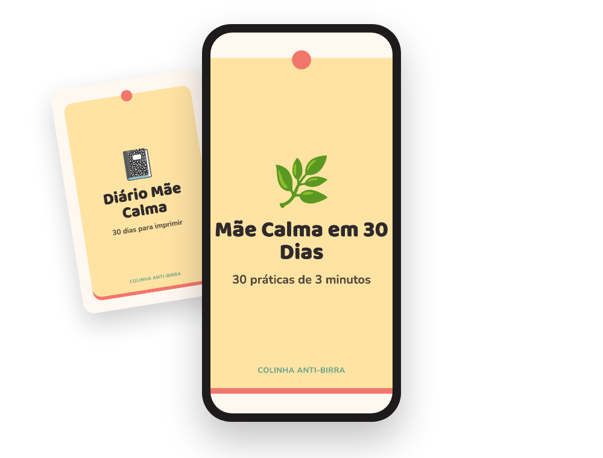

Espera! Sua Colinha já está garantida. Falta um passo para completar seu kit
A Colinha te dá a frase para a criança. Este passo cuida do seu freio, porque na birra são duas pessoas sem freio ao mesmo tempo.

Mãe Calma em 30 Dias
30 práticas de 3 minutos para você, mãe, trocar o grito pela pausa aos poucos.
- 30 práticas de 3 minutos, uma por dia, que cabem entre uma tarefa e outra.
- Os seus gatilhos: entender o que faz o seu freio falhar (cansaço, pressa, fome) e se preparar antes.
- Pausa e reparo para você: o que fazer nos segundos antes do grito e como reconectar depois.
- Rede de apoio e autocuidado mínimo: como pedir ajuda e se cuidar com o pouco tempo que sobra.
- Diário para imprimir: uma página por dia para acompanhar o seu caminho.
R$67
Pagamento único · Garantia de 7 dias
Se preferir não levar, toque em “Não, obrigada”. Sua Colinha continua garantida e o acesso chega no seu e-mail.